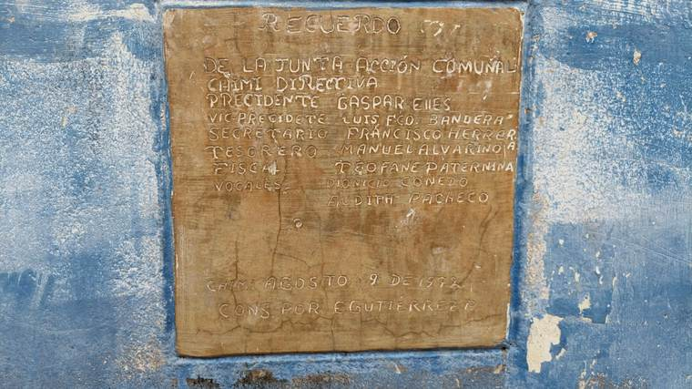

La placa de 1972
Transcripción literal, para usarla como prueba.
Lo que exige la ley
Quórum, mayorías y libros, en palabras sencillas.
Nueva Solicitud JAC
Queda guardada en este teléfono aunque no haya señal.
JAC-CHIMI-2026-0001 será el código de seguimiento.
Solicitudes
Todo lo radicado en este teléfono.
Libro de Actas
Solo Presidente y Secretario General.
Libro de Actas
⚠️ Primero la convocatoria, después el acta
Un acta sin convocatoria probada es la forma más fácil de que le tumben la asamblea. El art. 43 de la Ley 2166 exige seis datos y la firma del Presidente y del Secretario.
Quién puede poner un titular
Solo el Secretario General, que es quien comunica por ley (art. 43), y solo con una de tres fuentes: un acta sellada, una convocatoria guardada o una radicación con número.
Llevar la franja a los demás teléfonos
La franja viaja en un archivo pequeño: WhatsApp, Bluetooth o memoria. No necesita servidor.
Croquis de la comunidad
Marque en el croquis los bienes comunales y los puntos de atención. Se dibuja en la propia página: no usa mapas de internet ni envía la ubicación a ningún servicio.
Entrar con la huella del teléfono
Sirve para abrir el Libro sin escribir la clave. Identifica al dueño del teléfono —no al titular de una solicitud—, por eso solo se usa para esto.
Respaldo
Todo vive en este teléfono. Si se pierde, se pierde el libro. Haga el respaldo cada asamblea.
Cadena de integridad
Cada registro guarda la huella del anterior. Si alguien edita algo por detrás, la cadena se rompe y aquí se ve.
Comunidad — Chimí
Grupos y espacios de participación comunitaria